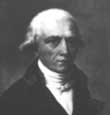

Siglo XVIII para la biología
Durante varios siglos se creyó firmemente en la teoría "creacionista", es decir que todas las especies habían existido tal cual eran desde la Creación divina, y la discusión se centraba en cuándo había tenido lugar ese momento y cuántas especies habían sido creadas. En el siglo XVII, por ejemplo, un religioso irlandés (James Ussher) se dedicó a contar las generaciones que aparecían en la Biblia y, añadiendoles a la historia moderna, llegó a la conclusión de que la Creación había sucedido el 23 de octubre del año 4004 antes del nacimiento de Cristo.
Durante los siglos XVII y XVIII, la biología se dedicó a la descripción de plantas y animales, sin intentar explicar cómo llegaron a ser así. El líder de esta tendencia fue el botánico sueco Carlos Linneo (1707 - 1778), quien escribió 180 libros en donde estableció un sistema de clasificación de todos los seres vivos. Esta clasificación propuso que las especies con rasgos físicos similares se podían agrupar en un mismo "género".
Al final del siglo XVIII y principios del XIX empezó a acumularse la evidencia de que las especies no siempre habían permanecido tal cual eran. Se propuso que algunas especies que habían existido en el pasado en el presente estaban extintas y que otras especies del presente antes no existían. Incluso se dijo que algunas especies del presente estaban relacionadas con otras especies que habían existido en el pasado.
Algunos de los científicos que en esta época dijeron que las formas de vida cambiaban con el tiempo fueron: Georges-Louis Leclerc, Conde Buffon (1707-17088); Erasmus Darwin (1731-1802); Jean Baptiste, chevalier de Lamarck (1744-1829) y Georges Cuvier (1769-1832).
Las dos teorías biológicas más importantes de este periodo fueron:
Lamarckianismo. Jean Baptiste Lamarck propuso que ciertos organismos se adaptan a su medio natural a través de cambios que heredan a sus descendientes. Lamarck ejemplificó su teoría con la jirafa, a la que, según el francés, le fue creciendo el cuello para alcanzar su alimento en las ramas altas de los árboles de su habitat.

Catastrofismo. Esta teoría fue creada por Georges Cuvier y decía que todos los seres vivos eran inmutables desde su origen pero que las catástrofes naturales de la historia de la Tierra (terremotos, sequías, inundaciones, etc.) habían provocado la desaparición de ciertas especies y la supervivencia de otras.
Con el tiempo se probó que estas dos teorías eran erróneas.
Durante el siglo XVIII la ciencia fue acumulando evidencia que explicaba el tipo de relación que las especies guardaban entre sí. Las disciplinas científicas que abrieron el camino para la moderna teoría de la evolución fueron:
La biogeografía (estudia la forma en que las especies están distribuidas en el mundo), la anatomía comparativa (compara las estructuras corporales de diferentes especies) y la geología (estudia las edades de la Tierra a través de los estratos geológicos).